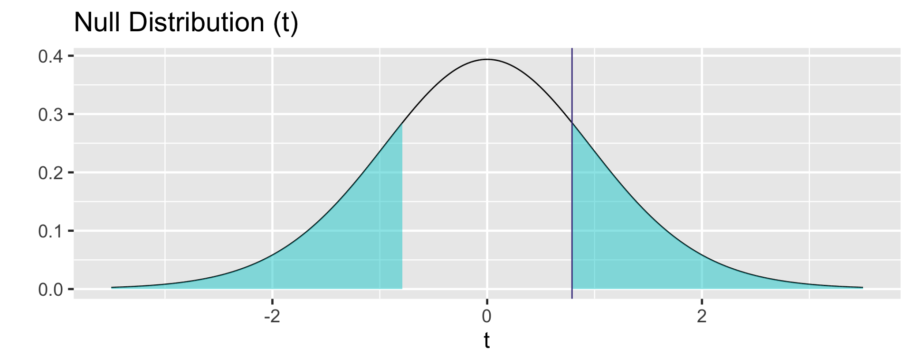
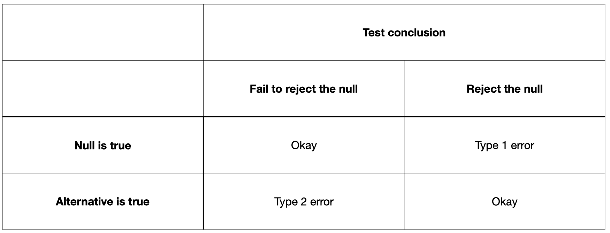

[1] 0.11Inference for Difference of Two Means
Dr. Mine Dogucu
Confidence Interval
Confidence Interval Review
Confidence Interval = point estimate \(\pm\) critical value \(\times\) standard error of the estimate
Confidence Interval Review
| point estimate | critical value | standard error of the estimate | |
|---|---|---|---|
| single proportion | \(p\) | z* | \(\sqrt{\frac{p(1-p)}{n}}\) |
| difference of two proportions | \(p_1-p_2\) | z* | \(\sqrt{\frac{p_1(1-p_1)}{n_1}+\frac{p_2(1-p_2)}{n_2}}\) |
| single mean | \(\bar x\) | \(t*_{df}\) | \(\sqrt{\frac{s^2}{n}}\) |
| difference of two means | \(\bar x_1 - \bar x_2\) | \(t*_{df}\) | \(\sqrt{\frac{s_1^2}{n_1} + \frac{s_2^2}{n_2}}\) |
Conditions
Independence: Within each group data have to be independent from each other. The two groups have to be independent from one another.
Normality: We check for normality for each group.
Confidence Interval for Difference of Two Means
\(\bar x_1 - \bar x_2 \pm t^*_{df} \times \sqrt{\frac{s_1^2}{n_1} + \frac{s_2^2}{n_2}}\)
Example
Onnasch, L., & Roesler, E. (2019). Anthropomorphizing Robots: The Effect of Framing in Human-Robot Collaboration. Proceedings of the Human Factors and Ergonomics Society Annual Meeting, 63(1), 1311–1315. https://doi.org/10.1177/1071181319631209
Experiment: A humanoid robot supports the participant of the study to solve a math puzzle. Do participants perceive the robots differently if the robots are described with anthropomorphic framing or functional framing?
Response variable: Perception of the robot (humanness, eeriness, acceptance)
Anthropomorphic framing
- the robot has a name
- has a personal story
- has a favorite color and hobbies
- pronoun: him
Functional framing
- height, weight
- pronoun: it
Response variable: Perception of the robot (humanness, eeriness, acceptance)
Anthropomorphic framing
- the robot has a name
- has a personal story
- has a favorite color and hobbies
- pronoun: him
\(n_1=20\)
\(\bar x_1 = 3.18\)
\(s_1 = 0.57\)
Functional framing
- height, weight
- pronoun: it
\(n_2=20\)
\(\bar x_2 = 3.07\)
\(s_2 = 0.29\)
Conditions
Independence within groups
Independence between groups
Normality
CI
\(\bar x_1 - \bar x_2 \pm t^*_{df} \times \sqrt{\frac{s_1^2}{n_1} + \frac{s_2^2}{n_2}}\)
95% CI
95% CI
95% CI = (-0.1893098 , 0.4093098)
Hypothesis Testing
Step 1: Set Hypotheses
\(H_0: \mu_1-\mu_2 = 0\)
\(H_A: \mu_1-\mu_2 \neq 0\)
Step 2: Identify the Sampling Distribution
\((\bar x_1 - \bar x_2) \sim \text{approximately }N(\text{mean} = \mu_1 - \mu_2, \text{sd} = \sqrt{\frac{\sigma_1^2}{n_1}+ \frac{\sigma_2^2}{n_2}})\)
If the null hypothesis is true then the sampling distribution will be approximately normal
\(N(\text{mean} = 0, \text{sd} = \sqrt{\frac{0.57^2}{20}+\frac{0.29^2}{20}})\)
\(N(\text{mean} = 0, \text{sd} = 0.14)\)
Where does the point estimate fall on the sampling distribution?
\(\frac{(3.18-3.07)-0}{0.14} = 0.79\)
Step 3: Calculate p-value
Step 4: Decision and Conclusion
If the null hypothesis were true ( \(\mu_1 - \mu_2 = 0\) ) then the probability of observing a difference in means in the sample that is at least as extreme as the difference ( \(\bar x_1 - \bar x_2\) ) that we have observed is 0.44 which is greater than 0.05. The sample we have observed does not serve as an evidence against the null. We fail to reject the null. We CANNOT conclude that there is not a significant difference in humans perception of humanoid robots between anthropomorphic framing and functional framing.
Paired Means or Difference of Two Means?
Paired Data
Two sets of observations are paired if there is one-to-one correspondence on each observation.
Example 1
The General Social Survey collects data on demographics, education, and work, among many other characteristics of US residents. A data anlyst examines the data from 2016 and finds those with a college degree worked 38.8 hours on average in a typical week, those without a college degree worked 41.3 hours. Write hypotheses that test whether there is any significant difference between average hours of work of those who have a college degree and those who do not.
Example 2
A statistics professor thinks that talking to students about self-confidence will help them improve their self confidence. She gives students a survey about self-confidence and then uses the scores to calculate a self-confidence score of each student. Then she talks to students about self-confidence and then gives them the survey again. Write hypotheses that test the statistics professor’s question.
Example 3
Many websites do A/B testing. During A/B testing they have two versions of the website A and B. When users log onto the website, random half of the users see Version A and and the other random half of the users see Version B. In one version of a web page (version A) users spend on average 3.18 minutes on the web page. In the other version of the web page (version B) they spend on average 2.97 minutes. Write hypotheses to test whether version A leads to users spending more time on the web page than version B.
Example 4
The following is an excerpt from a research study by Peterson DAM, Biederman LA, Andersen D, Ditonto TM, Roe K (2019).
Student evaluations of teaching are widely believed to contain gender bias. In this study, we conduct a randomized experiment with the student evaluations of teaching in four classes with large enrollments, two taught by male instructors and two taught by female instructors. In each of the courses, students were randomly assigned to either receive the standard evaluation instrument or the same instrument with language intended to reduce gender bias.
Students in the anti-bias language condition had significantly higher rankings of female instructors than students in the standard treatment. There were no differences between treatment groups for male instructors. These results indicate that a relatively simple intervention in language can potentially mitigate gender bias in student evaluation of teaching.
Write out hypotheses that would test the claim about the evaluation of female instructors.
Type 1 vs. Type 2 Errors
Note that we have often set the Type 1 error rate (\(\alpha\)) to 0.05. In future statistics courses, you might also see statistical power which is 1 - Type 2 error rate (\(1 - \beta\)).